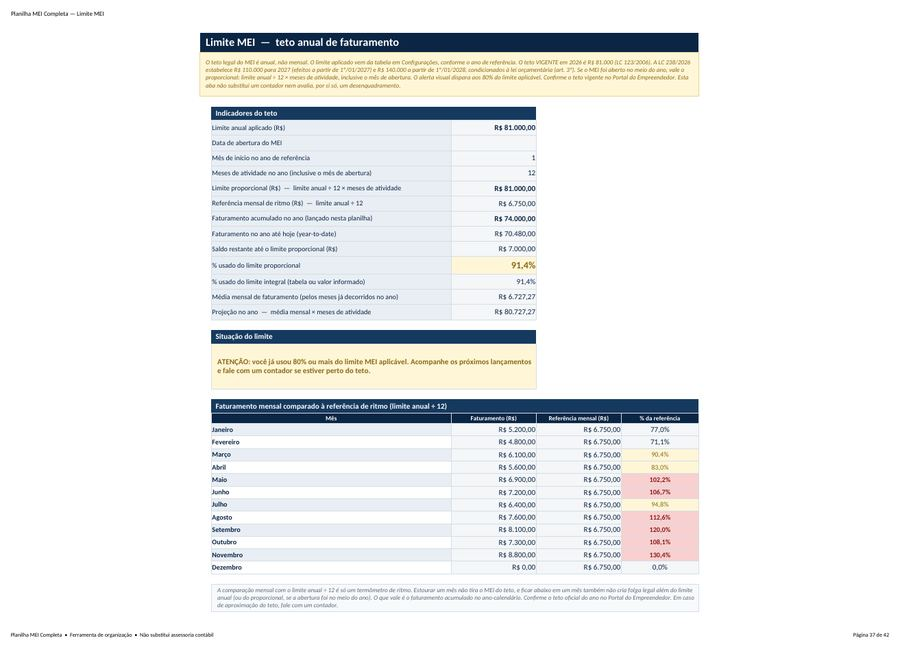
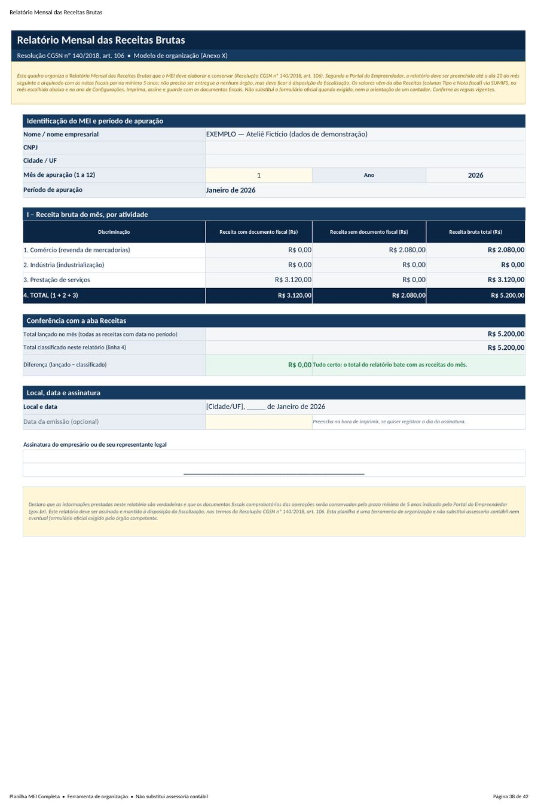

Pare de descobrir o problema só na declaração
Quem é MEI precisa guardar o relatório mensal, pagar o DAS todo mês, declarar a DASN-SIMEI uma vez por ano e não estourar o limite de faturamento. Se o controle está no caderno ou no extrato do banco, é fácil se perder.

Limite do MEI sob controle
Informe a data de abertura e a planilha calcula o teto do ano (inclusive o proporcional no ano de abertura), quanto você já usou e quanto ainda pode faturar.

O que vem na planilha
Receitas e despesas
Até 500 lançamentos de cada, com categorias.Fluxo de caixa e painel mensal
Entradas, saídas e saldo mês a mês, com gráfico.Limite MEI
Teto anual, proporcional e alerta de proximidade.Relatório Mensal
Relatório das Receitas Brutas pronto para guardar.DAS e metas
Controle de pagamento do DAS e metas do mês.Checklist DASN-SIMEI
O que conferir antes de declarar.
Como funciona
- Compre pela Kiwify. O acesso chega no seu e-mail.
- Abra no Excel ou no Google Planilhas e preencha a aba Configurações (nome, ano e data de abertura).
- Lance suas receitas e despesas. Painel, limite e relatório se atualizam sozinhos.
Importante: é uma ferramenta de organização. Não substitui contador, não emite a guia do DAS, não transmite a DASN-SIMEI e não é sistema oficial da Receita. Confirme limites e prazos no Portal do Empreendedor.
O que você leva
| Planilha MEI Completa (.xlsx, sem macros) | ✔ |
| Instruções passo a passo dentro da planilha | ✔ |
| Funciona no Excel e no Google Planilhas | ✔ |
| Mensalidade | Não tem |
R$ 47 pagamento único
Quero organizar meu MEIPerguntas frequentes
Funciona no celular?
Dá para consultar e lançar pelo app do Google Planilhas ou do Excel, mas a experiência é melhor no computador.
Preciso saber Excel?
Não. A aba Instruções mostra o passo a passo e as fórmulas já estão prontas.
Serve para o ano que vem?
Sim. Você escolhe o ano em Configurações e pode informar outro limite se a lei mudar.
Substitui o contador?
Não. Ela organiza seus números; obrigações oficiais continuam no Portal do Empreendedor / PGMEI.
Como recebo?
A Kiwify envia o acesso para o seu e-mail logo após a confirmação do pagamento.
Posso pedir reembolso?
Sim, em até 7 dias, pela Kiwify.